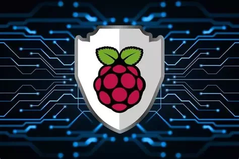

Contexte
Nécessité d'accéder aux ressources du réseau local (NAS, Imprimante, Serveurs) depuis l'extérieur de manière sécurisée, sans exposer directement les services sur Internet.
Réalisations
- Installation d'un serveur VPN sur Raspberry Pi.
- Configuration du port forwarding et du DDNS (Dynamic DNS).
- Génération des certificats et clés clients.
- Mise en place de règles de pare-feu (Firewall) strictes.
Bilan
Un tunnel chiffré permettant de travailler à distance comme si j'étais à la maison, en toute sécurité.